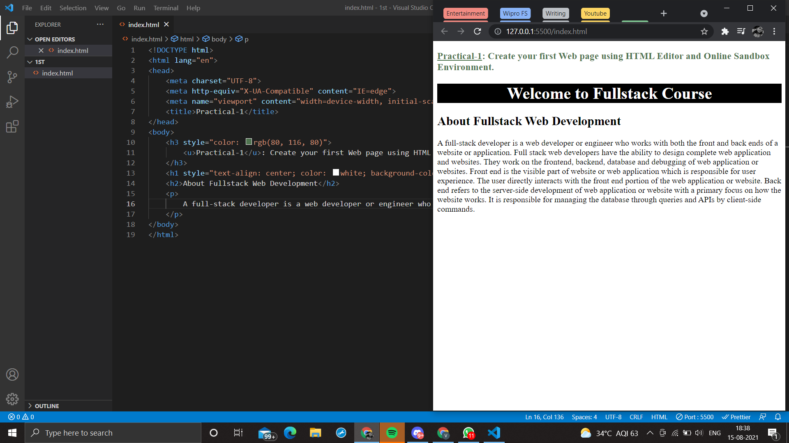
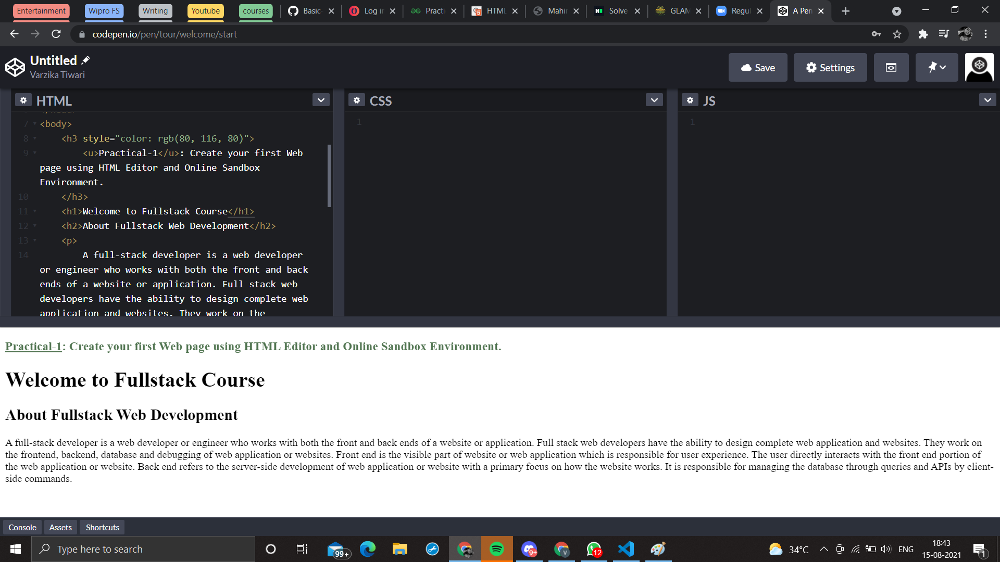

A full-stack developer is a web developer or engineer who works with both the front and back ends of a website or application. Full stack web developers have the ability to design complete web application and websites. They work on the frontend, backend, database and debugging of web application or websites. Front end is the visible part of website or web application which is responsible for user experience. The user directly interacts with the front end portion of the web application or website. Back end refers to the server-side development of web application or website with a primary focus on how the website works. It is responsible for managing the database through queries and APIs by client-side commands.
 